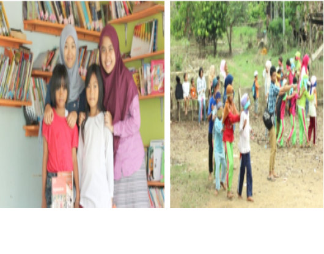
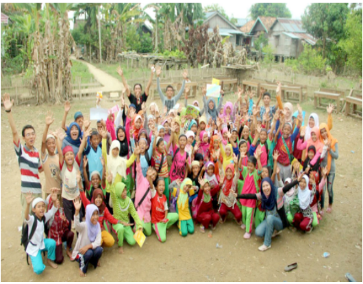

<!doctype html>
<html lang="en">
  <head>
    <!-- Required meta tags -->
    <meta charset="utf-8">
    <meta name="viewport" content="width=device-width, initial-scale=1, shrink-to-fit=no">

    <!-- Bootstrap CSS -->
    <link rel="stylesheet" href="../css/bootstrap.min.css">

    <!-- CSS Kel 12 -->
    <link rel="stylesheet" href="../style.css">
    <link rel="stylesheet" href="../fa/css/all.css">

    <title>Profil Sahabat Ilmu Jambi | Kantor Bahasa Provinsi Jambi</title>
  </head>
  <body id="kel12">
  <!-- Navbar -->
  <nav class="navbar navbar-expand-lg navbar-dark nav-top navbar-shrink nav-side">
    <a class="navbar-brand" href="../index.html"></a>
    <button class="navbar-toggler" type="button" data-toggle="collapse" data-target="#navbarNavAltMarkup" aria-controls="navbarNavAltMarkup" aria-expanded="false" aria-label="Toggle navigation">
      <span class="navbar-toggler-icon"></span>
    </button>
    <div class="collapse navbar-collapse" id="navbarNavAltMarkup">
      <div class="navbar-nav ml-auto">
        <a class="nav-item nav-link" href="../Komunitas.html">Komunitas</a>
      </div>
    </div>
  </div>
  </nav>
<!-- Akhir Navbar -->
  
  <!-- Jumbotron -->
  <div class="jumbotron-side">
      <div class="container">
        <h1 class="display-4"> Sahabat Ilmu Jambi </h1>
      </div>
  </div>
  <!-- Akhir Jumbotron -->

  <!-- Konten Profil -->
    <div id ="konten" class="container-fluid">
      <div class="container">
        <div class="row profile">
          <div class="col-md-12">
            <h4 class="judul">Profil</h4>
            <div class="kata-pengantar">
              <figure class="foto-rektor">
              
              <figcaption> Sahabat Ilmu Jambi </figcaption>
              </figure>
              </div>
              <div class="isi-kata-pengantar">
                <p>Alamat : Jalan KH.Ismail Malik No 16, Telanaipura, Kota Jambi, Jambi. </p>
             
                            <p>Email: -</p>
                                <p>Telp: -</p>
                                   
              </div>
          </div>
        </div>
        <div class="row all" style="margin-top: 100px;">
          <div class="col-md-12">
            <h4 class="Judul">Visi,Misi,Tujuan</h4>
            <div class="visi-misi-tujuan">
              <h1>Visi</h1>
              <p> - </p>
              <h1>Misi</h1>
              <ol>
                <li> - </li>
                <li> - </li>
                <li> - </li>
                <li> - </li>
              </ol>
              <h1>Kegiatan</h1>
              <ol>
                <li> Kegiatan pendampingan dibeberapa panti asuhan </li>
                <li> Edukasi keagamaan, akhlak terpuji, dan karakter bangsa </li>
                <li> Kunjungan ke beberapa sekolah negeri dan swasta</li>
                <li> peningkatan kreativitas pemuda dalam kewirausahaan</li>
                <li> Tur Literasi </li>
              
              </ol>
              
            </div>
          </div>
        </div>
        <a class="btn tombol show-more">Tampil Banyak</a>
        <div class="row all" style="margin-top: 100px;">
        <div class="col-md-12">
          <h4 class="Judul">Sejarah</h4>
          
          <div class="isi-sejarah">
            <p> Berbagai permasalahan pendidikan yang terjadi di Indonesia, 
              khususnya di Jambi, menjadi awal terbentuknya Sahabat Ilmu 
              Jambi (SIJ). Rendahnya minat baca dan tulis di kalangan anak 
              muda, kurangnya akses bacaan di beberapa wilayah, rendahnya 
              fasilitas dan sarana pendidikan, serta minimnya kegiatan sosial 
              yang bermanfaat bagi sesama, membuat Sahabat Ilmu Jambi 
              hadir. </p>
            <p>Sahabat Ilmu Jambi merupakan komunitas sosial independen pertama di Provinsi Jambi yang bergerak di bidang pendidikan. Sahabat Ilmu Jambi bertujuan untuk meningkatkan budaya 
              literasi berupa minat baca dan tulis di kalangan anak-anak dan 
              remaja yang kurang beruntung, seperti anak panti asuhan, anak 
              jalanan, dan anak tidak mampu. Selain itu, Sahabat Ilmu Jambi 
              bercita-cita mengajak pemuda-pemudi Kota Jambi agar lebih 
              empati dan berkontribusi dalam menciptakan kondisi edukasi 
              yang kondusif dan bersama-sama menciptakan perubahan ke 
              arah yang lebih positif. </p>
            <p>Jumat, 5 Agustus 2011 merupakan awal terbentuknya Komunitas Sahabat Ilmu Jambi yang berlokasi di Universitas Jambi. 
              Pembentukan Sahabat Ilmu Jambi diinisiai oleh Bella Moulina 
              dan Meila Rosianika serta delapan teman lainnya. Pada awalnya 
              Sahabat Ilmu Jambi hanya memiliki satu divisi yang fokus di 
              bidang literasi, yaitu divisi pendampingan. Seiring berjalannya 
              waktu, Sahabat Ilmu Jambi mendapatkan tempat di hati pemuda dan pemudi Kota Jambi. Hingga saat ini terdapat lebih dari 300 
              orang yang telah bergabung menjadi relawan Sahabat Ilmu 
              Jambi (data per Februari 2021). Divisi pun bertambah menjadi 
              empat, yaitu divisi pendampingan, divisi taman baca, divisi 
              jelajah sekolah, dan divisi social entrepreneurship.  </p>
           
            </div>
          </div>
        </div>
        <a id="" class="btn tombol show-more">Tampil Banyak</a>
      </div>
    </div>
    <!-- Akhir Konten Profil -->

<!-- Footer -->

<footer>
  <div class="footer-body">
    <div class="container">
      <div class="row">
        <div class="col-md-4 col-sm-6">
          
          <div class="alamat">
            <h6>KANTOR BAHASA PROVINSI JAMBI</h6>
            <p>Jl. Arif Rahman Hakim No.101, Simpang IV Sipin, Kec. Telanaipura, Kota Jambi, Jambi </p>
            <p>(0741) 669466</p>
            <p>Kodepos: 36361</p>
            <p>Posel: bahasajambi@kemdikbud.go.id</p>
          </div>
        </div>
      </div>
    </div>
  </div>
  <div class="footer-bottom">
    <div class="container">
      <div class="row">
        <div class="col-md-9">
          <p class="copyright">© Kantor Bahasa Provinsi Jambi</p>
        </div>
      </div>
    </div>
  </div>
</footer>
<!-- Akhir Footer -->
  
  
    <!-- Optional JavaScript -->
    <!-- jQuery first, then Popper.js, then Bootstrap JS -->
    <script src="https://code.jquery.com/jquery-3.3.1.slim.min.js" integrity="sha384-q8i/X+965DzO0rT7abK41JStQIAqVgRVzpbzo5smXKp4YfRvH+8abtTE1Pi6jizo" crossorigin="anonymous"></script>
    <script src="https://cdnjs.cloudflare.com/ajax/libs/popper.js/1.14.3/umd/popper.min.js" integrity="sha384-ZMP7rVo3mIykV+2+9J3UJ46jBk0WLaUAdn689aCwoqbBJiSnjAK/l8WvCWPIPm49" crossorigin="anonymous"></script>
    <script src="https://stackpath.bootstrapcdn.com/bootstrap/4.1.3/js/bootstrap.min.js" integrity="sha384-ChfqqxuZUCnJSK3+MXmPNIyE6ZbWh2IMqE241rYiqJxyMiZ6OW/JmZQ5stwEULTy" crossorigin="anonymous"></script>
    <script>

    var contents = document.getElementsByClassName("all");
    var buttons = document.getElementsByClassName("show-more");

    for (var i = 0; i < contents.length; i++) {
      // "let" creates locally scoped variables for use in the function.
      let content = contents[i];
      let button = buttons[i];
      button.onclick = function() {
        if (content.className == "open") {
          //shrink the box
          content.className = "all";
          button.innerHTML = "Tampil Banyak";
        } else {
          //expand the box
          content.className = "open";
          button.innerHTML = "Tampil Sedikit";
        }
      };
    }
    </script>
  </body>
</html>